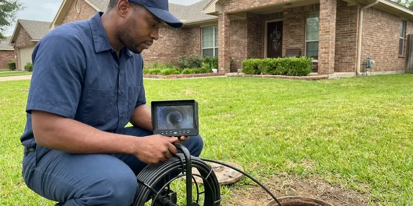

Water Damage Restoration in Tigard, OR
When water invades your home in Tigard, OR, you need fast, reliable water damage restoration. JFL Plumbing is ready to help.
- Thorough Drying Services
- Commercial Drying Equipment
- Odor & Mold Prevention
- Insurance Claim Support

Stop the Leak and Start Drying Your Home Today in Tigard, OR.
Don't let water damage get worse. Contact JFL Plumbing now for a fast assessment and effective solution.
Water Damage Restoration in Tigard, OR by Plumbers Who Fix the Source
At JFL Plumbing, our team is equipped to handle water damage restoration of every size, from minor leaks to major flooding. We focus on rapid water extraction, structural drying, and preventing secondary damage, so your Tigard property is safely restored.
Our expertise includes:
- Mold remediation and prevention.
- Experience in flood cleanup and structural drying.
- Drywall, baseboard and cabinet removal and replacement after drying

Additional Plumbing Maintenance Services in Tigard, OR
Our maintenance and specialty plumbing services in Tigard, OR protect your home year-round and extend the life of every system.


Customers
Why Choose JFL Plumbing for Water Damage Restoration in Tigard, OR?
Using one company for the plumbing repair and the restoration saves time and confusion. You get a single point of contact and a clear record for your insurer.
- Certified Technicians, Our team is IICRC certified, meaning they meet strict standards for restoration and cleaning.
- Rapid Response, We offer emergency services to address water damage right away, reducing its impact on your property.
- Certified Experts, Our technicians are fully trained and certified in water damage restoration techniques and safety practices.
Citywide Coverage
From older districts to newer developments, our teams are familiar with Tigard's diverse housing stock and can respond quickly to any water damage emergency. We are committed to providing prompt service throughout Tigard.
Experienced Team
Our water damage restoration team at JFL Plumbing is made up of highly trained and experienced professionals. They are skilled in assessing damage, implementing effective drying strategies, and restoring affected areas, following all local Oregon building codes.
Safety-First Approach
JFL Plumbing makes sure all water damage restoration work is performed to the highest safety standards and in full compliance with relevant building codes in Tigard. We use safe, non-toxic cleaning agents and provide proper ventilation during drying to protect your indoor air quality.
Trusted Certified Tigard Plumbing Services Professionals
At JFL Plumbing, we take pride in providing licensed, certified plumbing services throughout Tigard, OR. Backed by leading industry credentials, our experienced plumbers combine technical skill with genuine customer care. Whether it is repair, installation, or maintenance, we follow strict safety and quality standards to deliver lasting results you can trust.
Call Us Now PHCC Plumbing Contractor Recognition
PHCC Plumbing Contractor Recognition Better Business Bureau (BBB) Accreditation
Better Business Bureau (BBB) Accreditation Angi Certified Pro
Angi Certified Pro ISO 9001 Quality Management Certification
ISO 9001 Quality Management CertificationComplete Water Damage Restoration Services in Tigard, OR
Advanced Leak Detection and Repair in Tigard, OR
Often, water damage starts with a hidden leak. Our technicians in Tigard, OR use leak detection technology, such as acoustic sensors and thermal imaging, to pinpoint the source of water intrusion without invasive demolition. Once detected, we perform lasting repairs to prevent recurring water damage, saving you from future headaches and costly repairs.

Insurance Claim Assistance in Tigard, OR
Navigating insurance claims for water damage can be confusing. JFL Plumbing assists homeowners in Tigard, OR by documenting the damage with detailed reports and photos, which helps streamline the claims process. We work with most major insurance providers, providing clear communication and transparent estimates. While we don't file claims for you, our thorough documentation can greatly help in getting your claim approved and securing the coverage you deserve.
Emergency Water Extraction in Tigard
When pipes burst or floods occur, fast water extraction is critical to minimize damage. We use high-capacity pumps and industrial-strength wet vacuums to quickly remove standing water from your property in Tigard. Our quick response helps prevent water from seeping deeper into building materials and causing more extensive harm. We remove all visible water before beginning the drying process for faster, more thorough drying. This first step is key for a successful restoration.
Mold Prevention and Remediation in Tigard
Water damage, if not properly addressed, can quickly lead to mold growth, especially in warm, damp weather. Our water damage restoration process in Tigard includes preventive mold prevention steps. If mold is already present, we offer remediation services to safely remove it and treat affected areas, ensuring a healthy indoor environment for your family.
Water Damage Restoration Costs and Insurance in Tigard, OR
Restoration costs depend on how much area is affected, the water category and how long materials stayed wet. Small single-room jobs cost much less than whole-floor projects with flooring replacement. Many homeowners policies cover sudden and accidental water damage but not long-term leaks. We provide detailed photos, moisture logs and estimates to support your claim.
Basement and Crawl Space Water Cleanup in Tigard
Basements and crawl spaces are especially vulnerable to water damage, which can lead to foundation issues and leaks. Hillside homes can face soil movement after heavy rain, which can crack buried water and sewer lines. Our team in Tigard specializes in cleaning and drying these hard-to-reach areas. We remove contaminated materials, sanitize surfaces, and put solutions in place to prevent future water intrusion, protecting your home's foundation and air quality.
Mold Remediation and Prevention in Tigard
Water damage often leads to mold growth. Long, wet seasons are the main climate stress in western Oregon, keeping soil saturated and putting steady pressure on drainage systems. Our team is trained in effective mold remediation techniques, safely removing existing mold colonies and treating affected areas in Tigard to prevent recurrence. We use EPA-approved antimicrobial agents and provide proper ventilation during the process. Preventing mold is important for indoor air quality and the long-term health of your home and family, as some mold types can cause respiratory issues.

Sewer Backup Cleanup in Tigard
Sewer backups present a serious health hazard due to contaminated water. Our team provides professional cleanup services for sewer backups in Tigard, safely removing wastewater and disinfecting affected areas. We use protective gear and follow strict protocols to prevent the spread of bacteria and pathogens. This service includes thorough cleaning, sanitization, and deodorization to restore your property to a safe, livable condition, often including removal of porous materials.
Water Damage Restoration Near Me in Tigard, OR
When water is spreading across your floor, you need a crew that is close by. Our teams are stationed throughout the area with extraction and drying equipment ready to go. That means faster arrival and less damage.
JFL Plumbing is your trusted local expert, ready to dispatch a team to your home quickly. We are committed to serving the Tigard community with dependable and efficient water damage restoration services, every time.
JFL Plumbing at a Glance
- Licensed and insured plumbers serving Tigard, OR
- 24/7 emergency service with same-day scheduling
- Upfront, flat-rate pricing before work begins
- 4.8-star rated by 657+ Oregon customers
Tigard Map
Tigard Information
- Population
- 55,590
- Area codes
- 503/971/541
- Service area
- Tigard and communities within 40 miles
- Nearby
- Beaverton, Lake Oswego, Aloha, Bethany
Water damage restoration is critical for homes in Tigard, OR because soaked soil and wet framing can turn a single leak into lasting structural problems if drying is delayed.
Expert Services
Trust our professionals for reliable JFL Plumbing solutions in Tigard, OR.
Our Specialized Plumbing Services in Tigard, OR
At JFL Plumbing, we provide a complete range of plumbing services across Tigard, OR. From leak detection to full system installations, our team ensures fast, precise, and affordable service for both residential and commercial properties. Explore our core services below:


How Our Water Damage Restoration Process Works in Tigard, OR
Our restoration process moves from stopping the water to drying and rebuilding as quickly as possible.
Request a Quote
Contact JFL Plumbing immediately at (971) 333-7694 when you discover water damage. We'll gather initial details and schedule a fast assessment to understand the scope of the damage.
Emergency Response
Our team arrives promptly to assess the damage, identify the water source, and put immediate containment measures in place to prevent further issues.
Water Extraction
We use powerful equipment to remove all standing water efficiently, which is a critical step in preventing secondary damage like mold.
Frequently Asked Questions About Water Damage Restoration in Tigard
The cost of water damage restoration in Tigard varies a lot depending on the extent of the damage, the category of water, whether clean, gray, or black water, and the materials affected. Minor clean water incidents might range from $1,500 to $4,000, while extensive black water damage involving structural repairs could be $10,000 or more. We provide a detailed estimate after a thorough assessment.
We use professional equipment, including powerful submersible pumps and industrial-grade wet and dry vacuums for water extraction, high-velocity air movers, and commercial dehumidifiers for thorough drying. We also use professional moisture meters and thermal imaging cameras to detect hidden moisture in walls and floors.
The duration of the water damage restoration process depends heavily on the severity of the damage. Minor issues might be resolved in 2 to 3 days, while extensive damage requiring demolition, drying, and rebuilding could take several weeks. We provide a timeline estimate after our first assessment.
Household fans can help with small surface spills but rarely dry wall cavities, subfloors or cabinets fully. Hidden moisture can lead to mold and structural damage. Professional equipment and moisture monitoring give more reliable results.
Yes, mold remediation is an important part of our water damage restoration services. If mold is detected or suspected, our certified technicians will safely contain and remove it, then treat the area to prevent future growth. Long, wet seasons are the main climate stress in western Oregon, keeping soil saturated and putting steady pressure on drainage systems. Mold can take hold fast after water intrusion.
While you can handle minor leaks or spills, professional water damage restoration is highly recommended for anything beyond surface moisture. Professionals have specialized equipment to confirm complete drying and prevent mold, and they can safely handle contaminated water.
Signs of hidden water damage include musty odors, visible mold growth on walls or ceilings, peeling paint or wallpaper, warped flooring, and stained drywall. A sudden increase in your water bill could also indicate a hidden leak. If you notice any of these signs, it's important to have a professional inspection to prevent further damage.
JFL Plumbing offers 24/7 emergency response for water damage. Our goal is to arrive at your Tigard property within a few hours of your call, as prompt action is critical in limiting damage and preventing further issues like mold growth.
What People Are Saying About Our Plumbing Experts?

Robert G.
The trenchless sewer replacement saved our front yard. They walked us through the camera inspection footage first so we knew exactly what we were paying for.
Sewer Line Replacement · Portland, OR
Laura S.
I scheduled a water heater replacement, and the team made the process smooth and affordable. The new unit works perfectly, and they cleaned up after completing the job.
Water Heater Replacement · Bethany, OR
Patricia H.
We had a slab leak that two other companies could not find. JFL Plumbing located it in under an hour, explained our options, and the price matched the quote to the dollar.
Slab Leak Repair · Portland, OR
Mark T.
When our office needed drain cleaning, JFL Plumbing provided quick, reliable service. The plumber arrived on time and made sure every drain flowed perfectly before leaving. Very satisfied.
Drain Cleaning · Lake Oswego, ORSofia M.
Two new toilets installed in one visit, no mess left behind, and the tech even adjusted a faucet he noticed was dripping. Fair pricing and really friendly.
Toilet Installation · Aloha, OR
Daniel K.
A pipe burst at 11 pm and they actually answered. The plumber showed up within the hour, shut everything down, and had us back to normal the next morning. Could not ask for more.
Emergency Plumbing · Aloha, OR